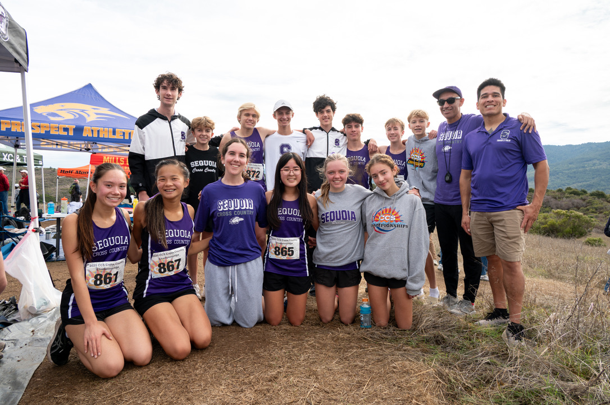
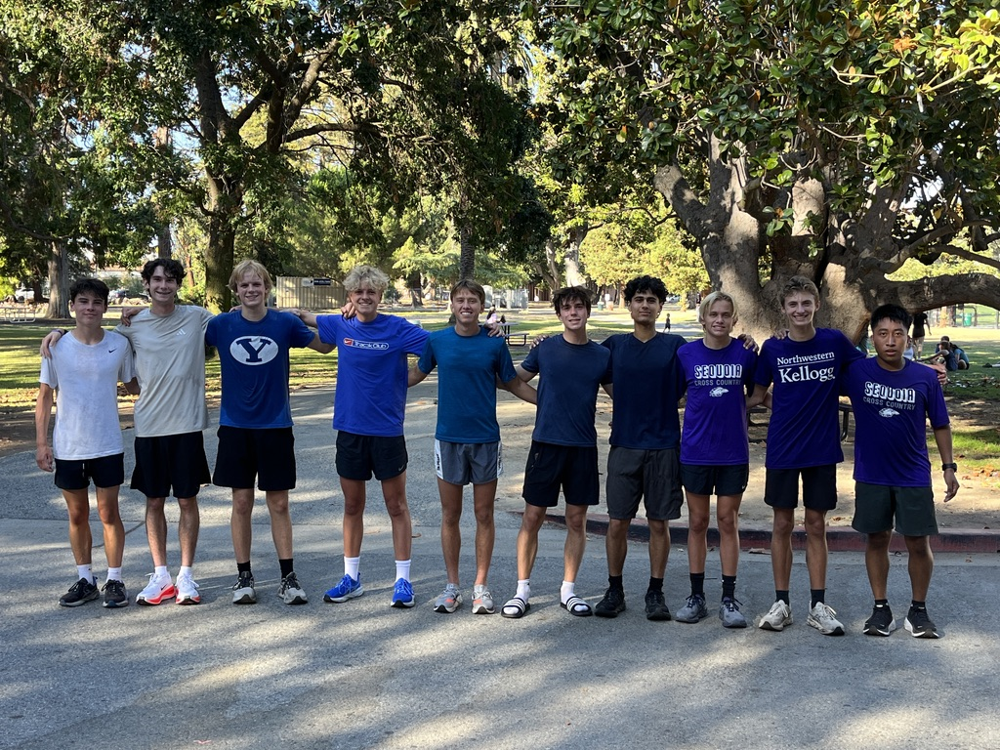
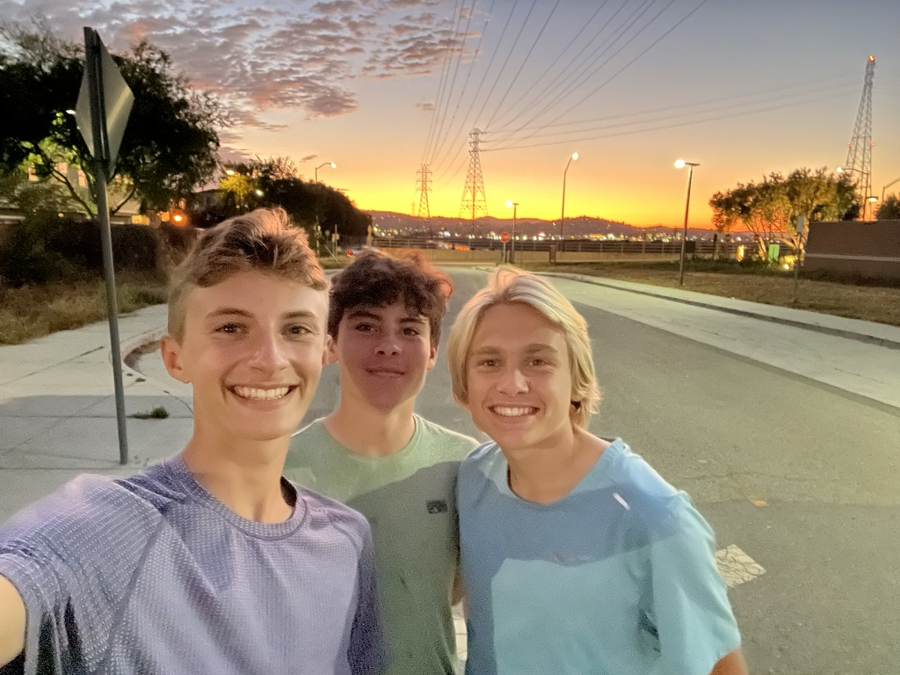
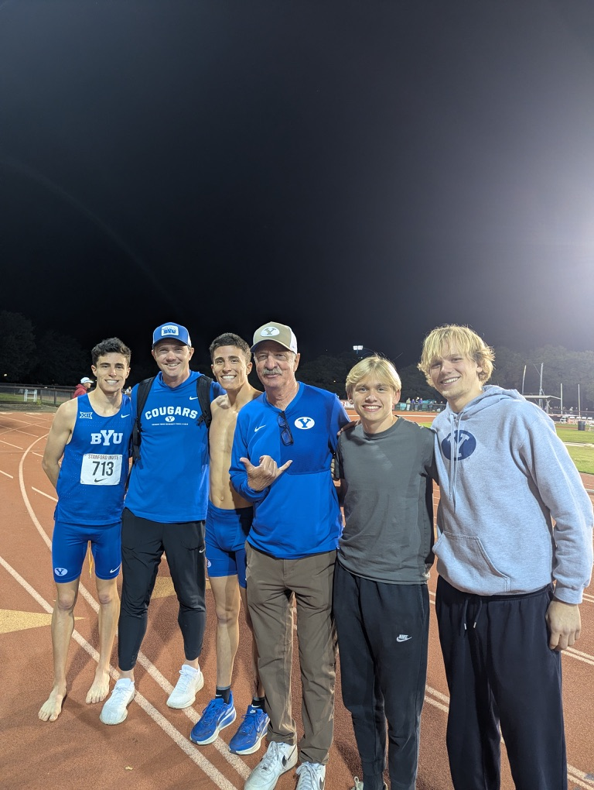

Teddy Tripwell High School · San Carlos, CA
San Carlos, CA · Est. 2024–25 Season · PAL · CCS
// About the Program
Teddy Tripwell High School Cross Country is a competitive program based in San Carlos, CA. Home of the Tripwells. We compete in the Peninsula Athletic League (PAL) Ocean Division and the Central Coast Section (CCS) Northern Conference. Our team trains year-round, logging early morning miles before sunrise, chasing PRs, and building something worth being part of.

CCS Championships · Teddy Tripwell Cross Country



What sport is this?
Cross country and track & field. We run a lot. Like, a lot a lot.
Where do you compete?
We compete in the PAL Bay Division division and qualify for the Central Coast Section (CCS) championships.
When do you practice?
Before the sun comes up. While you're sleeping. Every day.
What school is this?
Teddy Tripwell High School, located at 900 Chestnut St, San Carlos, CA 94070. Home of the Tripwells.
Can I join?
Yes. Show up. Run. Don't quit.
Do you win?
We're working on it.
Who's the goat?
McRae.